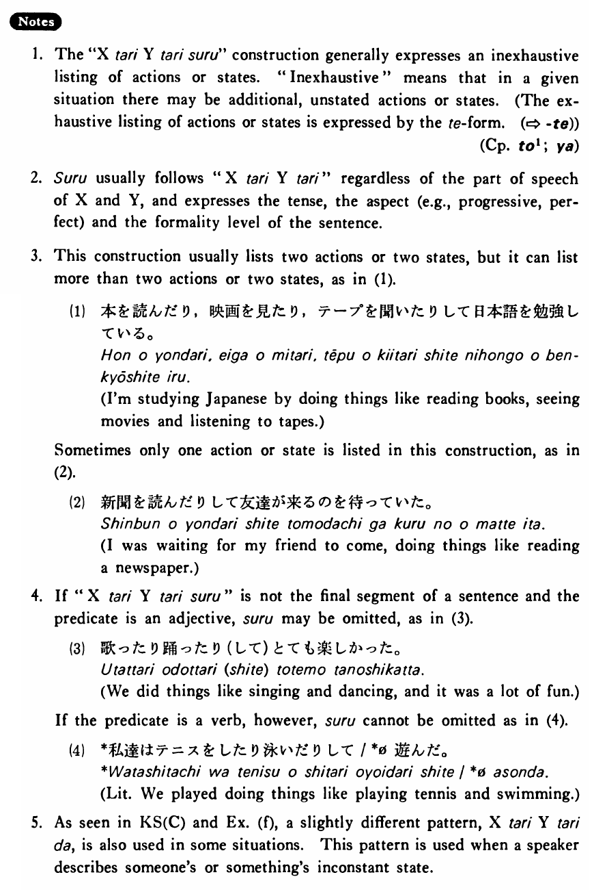

←
DoJG
→
たり～たりする
(B. 458)
Example sentences
(ksa).
私達は歌っ
たり
躍っ
たりした
・
しました
。
We did things like singing and dancing.
(ksb).
このレストランのステーキは大きかっ
たり
小さかっ
たりする・します
。
Steaks at this restaurant are sometimes big and sometimes small.
(ksc).
A:毎日テープを聞いていますか。 B:いいえ、聞い
たり
聞かなかっ
たり
です。
A: Are you listening to tapes every day? B: No, I listen at one time and don't listen at another (only off and on).
(a).
私はニューヨークでミュージカルを見
たり
コンサートを聞い
たりした
。
In New York I did things like seeing musicals and listening to concerts.
(b).
トムは来
たり
来なかっ
たりする
。
Tom comes at one time and doesn't at another time (Tom doesn’t always come).
(c).
明日は雨が降っ
たり
止ん
だりする
でしょう。
It will probably rain off and on tomorrow.
(d).
この店の魚は新しかっ
たり
古かっ
たりする
。
This shop's fish is sometimes fresh and sometimes old.
(e).
日本語の先生は日本人だっ
たり
アメリカ人だっ
たりします
。
Teachers of Japanese are sometimes Japanese and sometimes American.
Formation
{V/Adjective (い/な) Noun+Copula} informal past
り
(する)
話した
り
(する)
Someone (does) things like talking
高かった
り
(する)
Something is sometimes expensive
静かだった
り
(する)
Something is sometimes quiet
先生だった
り
(する)
Someone is sometimes a teacher
